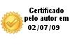

|
Rogério Carvalho Schneider Profissional
formado em Ciência da Computação pela Universidade de Cruz Alta (2006),
com 7 anos de experiência em administração e gerenciamento de serviços de
rede em ambientes BSD/Linux. Última atualização do currículo em
02/07/2009
Endereço para acessar este CV: http://lattes.cnpq.br/7590870877142991  |
| Nome | Rogério Carvalho Schneider |
| Nome em citações bibliográficas | SCHNEIDER, Rogério Carvalho |
| Sexo | Masculino |
| Endereço profissional | Terra Networks Brasil S/A,
Service Delivery. Rua General João Manuel, 90 Centro 90010-030 - Porto Alegre, RS - Brasil Telefone: (51) 32844000 Ramal: 4050 URL da Homepage: http://www.terra.com.br/ |
| 2002 - 2006 | Graduação em Ciência da
Computação . Graduação em Ciência da Computação. Universidade de Cruz Alta, UNICRUZ, Brasil. Título: Netact - Atuador em Gerência de Redes. Orientador: Antônio Rodrigo Delepiane de Vit. |
| 1998 - 2000 | Ensino Médio (2º grau) .
Escola Estadual 2º Grau Rui Barbosa. |
| 1989 - 1997 | Ensino Fundamental (1º grau) .
Instituto Municipal de Ensino Assis Brasil. |
| 2008 - 2008 | Vignette Content 7.5 - Foundation
Building Content. (Carga horária: 16h). Vignette. |
| 2008 - 2008 | Vignette Portal 7.3 - Foundation:
Managing Portal. (Carga horária: 16h). Vignette. |
| 2008 - 2008 | Vignette Content 7.5 - System
Administration. (Carga horária: 16h). Vignette. |
| 2008 - 2008 | Vignette Portal 7.3 - System
Administration. (Carga horária: 16h). Vignette. |
| 2008 - 2008 | Vignette Dynamic Portal Module
2.0.7 - Foundation. (Carga horária: 16h). Vignette. |
| 2007 - 2007 | Curso PMBOK na Prática. (Carga
horária: 36h). Conduta Tecnologia da Informação LTDA. |
| 2005 - 2005 | Curso de PHP. (Carga horária:
20h). Universidade de Cruz Alta, UNICRUZ, Brasil. |
| 2003 - 2003 | Curso de C Avançado. (Carga
horária: 20h). Universidade de Cruz Alta, UNICRUZ, Brasil. |
| 2003 - 2003 | Curso de C++. (Carga horária:
20h). Universidade de Cruz Alta, UNICRUZ, Brasil. |
| Terra Networks Brasil S/A, TERRA, Brasil. |
| Vínculo institucional |
| 2006 - Atual | Vínculo: Colaborador, Enquadramento Funcional: Analista de Suporte, Carga horária: 44, Regime: Dedicação exclusiva. |
| Outras informações | Empresa onde trabalho atualmente, desenvolvendo as seguintes tarefas: <BR> - Dimensionamento de infra-estrutura computacional para atendimento de carga e entrega, atividades de Service Delivery, suporte nível II; <BR> - Implantação/atualização de sistemas em produção; <BR> - Gerenciamento de configurações, changelogs e versionamento de pacotes bem como definição/homologação de procedimentos de instalação e disaster recovery; <BR> - Garantir a disponibilidade de serviço para o usuário final; <BR> - Instalação/configuração/manutenção de sistema operacional linux em parque de máquinas com a finalidade de atender demandas de crescimento de audiência ou demandas internas de novos ambientes; <BR> - Troubleshooting com sistema de tickets, nível II de atendimento; <BR> - Interação com infra-estrutura e team-mates locados em diferentes regiôes do mundo, com múltiplos datacenters; <BR> - Participação em diversos projetos para atendimento de demandas em eventos de alta audiência (Pan, Olimpíadas, Eleições); <BR> - Forte experiência com entrega Web, principalmente Apache2 e Squid/Varnish; <BR> - Análise de desempenho de sites, protocolo HTTP; <BR> - Experiência com clustering em HeartBeat/Carp/PFsync; <BR> - Contato com balanceadores de carga via hardware (Alteon); <BR> - Forte experiência em desenvolvimento Python, C e shell script. Conhecimentos intermediários em Perl; <BR> - Coaching de novos integrantes da equipe para absorção mais rápida de tarefas; <BR> - Tecnologias de entrega e gerenciamento de conteúdo (CDS, CMS): Vignette 6 e Vignette 7. |
| Atividades |
| 12/2007 - Atual | Serviços técnicos especializados , Service Delivery, . |
| Serviço realizado Analista de Suporte Pleno. |
| 12/2006 - 12/2007 | Serviços técnicos especializados , Service Delivery, . |
| Serviço realizado Analista de Suporte Junior. |
| Universidade de Cruz Alta, UNICRUZ, Brasil. |
| Vínculo institucional |
| 2003 - 2006 | Vínculo: Colaborador, Enquadramento Funcional: Administrador de Redes, Carga horária: 40 |
| Outras informações | Durante meu período de trabalho nesta instituição produzi: <BR> - O sistema de gerência de redes de uma instituição de ensino superior; <BR> - A implementação de automação de processos em servidores desta instituição; <BR> - A implantação de políticas e medidas técnicas de segurança desta instituição, no que tange à rede de computadores, através de controle de acessos e geração de relatórios de acesso para cada serviço oferecido na rede; <BR> - Integração entre servidores Windows e Linux/FreeBSD, automatizando processos administrativos; <BR> - Desenvolvimento e aplicação do sistema de backup de servidores de rede e dados desta instituição. O sistema de backup foi desenvolvido por mim para atender a uma necessidade interna da instituição; <BR> - A manutenção dos serviços de rede e internet desta instituição por todo o período de trabalho, que ficou sob minha responsabilidade, bem como o atendimento ao público quanto a problemas relacionados a estes temas: contas de e-mail, contas em servidores de arquivos, acessos internet, relatórios de acesso e acesso remoto; <BR> - Tecnologias utilizadas: Shell script; C; Sistemas Operacionais livres, como Linux e FreeBSD; iptables, ipfw e pf para QoS e filtros; Roteadores CIsco; Squid; Sarg; MySQL; Postgres; Samba; Sendmail e Postfix. |
| Atividades |
| 2006 - 2007 | Atividades de Participação em Projeto, Faculdade de Ciência da Computação de Cruz Alta, . |
| Projetos de pesquisa Nectact 2.0 - Atuador em Gerência de Redes |
| 08/2006 - 11/2006 | Serviços técnicos especializados , Faculdade de Ciência da Computação de Cruz Alta, . |
| Serviço realizado Administração de Redes. |
| 10/2003 - 08/2006 | Estágios , Faculdade de Ciência da Computação de Cruz Alta, . |
| Estágio realizado Administração de Redes. |
| 03/2005 - 12/2005 | Atividades de Participação em Projeto, Faculdade de Ciência da Computação de Cruz Alta, . |
| Projetos de pesquisa Infra-estrutura para interação científico-tecnológica com uso da videoconferência |
| 08/2005 - 09/2005 | Treinamentos ministrados , Faculdade de Ciência da Computação de Cruz Alta, . |
| Treinamentos ministrados Curso de Suporte em FreeBSD - Ministrado |
| 09/2004 - 11/2004 | Treinamentos ministrados , Faculdade de Ciência da Computação de Cruz Alta, . |
| Treinamentos ministrados Curso de Suporte em Linux - Ministrado |
| 05/2004 - 05/2004 | Outras atividades técnico-científicas , Faculdade de Ciência da Computação de Cruz Alta, . |
| Atividade realizada Jornada de Atualização Tecnológica - Curso de Redes - Ministrado. |
| Vital Assessoria e Consultoria Empresarial, VITAL, Brasil. |
| Vínculo institucional |
| 2004 - 2006 | Vínculo: Colaborador, Enquadramento Funcional: Programador, Carga horária: 20 |
| Outras informações | Durante meu período de trabalho nesta empresa, realizei as seguintes tarefas na área de Programação: <BR> - Programação em C/PHP/WML e Banco de Dados para ambientes de Automação Industrial e de Processos (Saneamento); <BR> - Implementação de protocolos de comunicação em C e Java; <BR> - Construção de um sistema de automação de águas, que é responsável pelo abastecimento ainda hoje a uma localidade no interior do Estado do Rio Grande do Sul; <BR> - Programação de Bancos de Dados; <BR> - Programação de CLP em linguagem proprietária BCM; <BR> - Criação de um Sistema Supervisório baseado em plataforma de software livre, gerando economia na compra de licenças para as empresas envolvidas nos processos de automação industrial; <BR> - Desenvolvimento de um sistema de comunicação que usa tecnologia de telefonia celular para as troca de dados entre os pontos da automação; <BR> - Uso do conhecimento já adquirido em ambientes de software livre para a montagem de servidores genéricos de comunicação celular; <BR> - Uso de software livre em sistemas servidores de automação, tanto no modo centralizador de banco de dados, telefonia celular, comunicação e tomadas de decisão como em interfaces locais, Web e WAP. |
| Vínculo institucional |
| 2002 - 2004 | Vínculo: Colaborador, Enquadramento Funcional: Desenhista AutoCAD, Carga horária: 20 |
| Outras informações | Durante meu período de trabalho nesta empresa, realizei as seguintes tarefas na área de Desenhos: <BR> - Desenhista em AutoCAD e AutoPOWER para projetos Elétricos; <BR> - Conversão de plantas impressas para o meio digital por meio de redrawing, usando sistema de escala reversa; <BR> - Impressão de plantas em escala para uso em campo. |
| Atividades |
| 08/2004 - 04/2006 | Serviços técnicos especializados , Escritório, . |
| Serviço realizado Programação em C/PHP/WML e Banco de Dados para ambientes de Automação Industrial e de Processos (Saneamento). |
| 10/2002 - 08/2004 | Serviços técnicos especializados . |
| Serviço realizado Desenhos de Projetos Elétricos em AutoCAD e AutoPOWER. |
| 2006 - 2007 | Nectact 2.0 - Atuador em
Gerência de Redes |
| Descrição:
No processo de gerência de redes, a tomada de medidas administrativas
normalmente é auxiliada pelo uso de ferramentas de gerência. Através da
geração de relatórios com estatísticas do uso de rede torna-se possível
identificar os pontos falhos de um sistema e, a partir destes dados, tomar
medidas corretivas embasadas. Sendo assim, o objetivo deste trabalho é
integrar essa geração de relatórios, a partir de ferramentas já
existentes, com uma base de dados histórica com a finalidade de gerar
padrões de rede e utilizar técnicas de identificação de desvios para
diagnosticar, de forma automática, as anomalias de rede. <BR> O
NetAct é uma ferramenta que auxilia na gerência de rede e que tem esta
proposta, a de identificar um ponto falho e realizar um processo curativo,
de forma autônoma e constante.. Situação: Concluído; Natureza: Pesquisa. Alunos envolvidos: Graduação ( 1) . Integrantes: Antônio Rodrigo Delepiane de Vit - Coordenador / Jeferson Franke - Integrante / Rogério Carvalho Schneider - Integrante. . |
| 2005 - 2005 | Infra-estrutura para interação
científico-tecnológica com uso da videoconferência |
| Descrição:
O projeto tem como objetivo principal propor uma estratégia de
implantação de um sistema de colaboração visual usando videoconferência e
tecnologia de compartilhamento de ambiente de trabalho com vistas a apoiar
o trabalho cooperativo de pesquisadores e estudantes remotamente situados
nas entidades acadêmicas e de pesquisa da Rede TCHÊ. <BR> O projeto
visa ampliar a capacidade de interação da rede de forma a integrar mais
ativamente o sistema estadual, criando alternativa de comunicação
audiovisual direta entre os Pontos de Presença, num primeiro momento,
visando oferecer este instrumento para todos os elementos conectados,
dirigido basicamente para o ensino à distância e o atendimento às
populações carentes através da interação de conhecimento produzido pelas
IES e pelos Centros de Pesquisa dentro do Sistema de Informações da Rede,
inclusive para os Telecentros.. Situação: Concluído; Natureza: Pesquisa. Alunos envolvidos: Graduação ( 1) . Integrantes: Alessandro Copetti - Coordenador / João Carlos Cavalcanti da Silveira - Integrante / Adriana Soares Pereira - Integrante / Rogério Carvalho Schneider - Integrante. Financiador(es): Secretaria de Ciência e Tecnologia do Estado do Rio Grande do Sul - Auxílio financeiro.. |
| 1. | Grande área: Ciências Exatas e da
Terra / Área: Ciência da Computação. |
| 2. | Grande área: Ciências Exatas e da
Terra / Área: Ciência da Computação / Subárea: Sistemas de
Computação. |
| 3. | Grande área: Ciências Exatas e da
Terra / Área: Ciência da Computação / Subárea: Metodologia e
Técnicas da Computação. |
| Inglês | Compreende Razoavelmente, Fala Pouco, Lê Bem, Escreve Bem. |
| Espanhol | Compreende Pouco Lê Pouco. |
| 2006 | Aluno Destaque, Sociedade Brasileira de Computação - SBC. |
| Produção bibliográfica |
| Textos em jornais de notícias/revistas |
| 1. |  SCHNEIDER,
Rogério Carvalho ; VIT, Antônio Rodrigo Delepiane de ; TAROUCO, Liane
Margarida Rockenbach . PROPOSTA DE UMA FERRAMENTA DE GERÊNCIA ATIVA DE
REDES - NETACT. Revista Digital, Cruz Alta/RS, 01 abr. 2006. SCHNEIDER,
Rogério Carvalho ; VIT, Antônio Rodrigo Delepiane de ; TAROUCO, Liane
Margarida Rockenbach . PROPOSTA DE UMA FERRAMENTA DE GERÊNCIA ATIVA DE
REDES - NETACT. Revista Digital, Cruz Alta/RS, 01 abr. 2006.
|
| Trabalhos completos publicados em anais de congressos |
| 1. | FRANKE,
Jeferson ; VIT, Antônio Rodrigo Delepiane de ; SCHNEIDER, Rogério Carvalho
; TAROUCO, Liane Margarida Rockenbach ; GUBERT, Luis Cláudio . GERAÇÃO DE
BASELINE PARA A FERRAMENTA NETACT: ATUADOR EM GERÊNCIA DE REDES. In: XXII
Congresso Regional de Iniciação Científica e Tecnológica em Engenharia e
VII Feira de Protótipos - CRICTE/RS, 2007, Passo Fundo/RS. GERAÇÃO DE
BASELINE PARA A FERRAMENTA NETACT: ATUADOR EM GERÊNCIA DE REDES, 2007.
|
| 2. | SCHNEIDER,
Rogério Carvalho ; VIT, Antônio Rodrigo Delepiane de ; TAROUCO, Liane
Margarida Rockenbach ; PILLATT, Fábio Roberto ; RISTA, Luís Cassiano
Goularte . NETACT ATUADOR EM GERÊNCIA DE REDES. In: V Simposio de
Informatica da Regiao Centro do Rio Grande do Sul - SIRC/RS, 2006, Santa
Maria/RS. NETACT ATUADOR EM GERÊNCIA DE REDES, 2006. |
| Resumos publicados em anais de congressos |
| 1. | SCHNEIDER, Rogério Carvalho ; VIT, Antônio Rodrigo Delepiane de ; TAROUCO, Liane Margarida Rockenbach . NETACT ATUADOR EM GERÊNCIA DE REDES. In: Seminário Unicruz, 2005, Cruz Alta/RS. NETACT ATUADOR EM GERÊNCIA DE REDES, 2005. |
| Apresentações de Trabalho |
| 1. | SCHNEIDER, Rogério Carvalho ; VIT, Antônio Rodrigo Delepiane de ; TAROUCO, Liane Margarida Rockenbach . PROPOSTA DE UMA FERRAMENTA DE GERÊNCIA ATIVA DE REDES - NETACT. 2006. (Apresentação de Trabalho/Seminário). |
| 2. | SCHNEIDER, Rogério Carvalho ; COPETTI, Alessandro . Curso Internet nas Empresas - Reduzindo Custos. 2004. (Apresentação de Trabalho/Conferência ou palestra). |
| 3. | SCHNEIDER,
Rogério Carvalho . Curso de Rede de Computadores. 2004. (Apresentação de
Trabalho/Conferência ou palestra). |
| Produção técnica |
| Softwares sem registro de patente |
| 1. | SCHNEIDER, Rogério Carvalho . Varnish Epoll Overhaul. 2009. |
| 2. | SCHNEIDER,
Rogério Carvalho ; STUDT, Sandro ; GUBERT, Luis Cláudio . Sistema de
Automação de Distribuição de Águas Monte Bonito/Recanto de Portugal -
SANEP. 2005. |
| Participação em eventos |
| 1. | FISL 10 - Fórum Internacional de Software Livre. 2009. (Outra). |
| 2. | XXII Congresso Regional de Iniciação Científica e Tecnológica em Engenharia e VII Feira de Protótipos - CRICTE/RS.GERAÇÃO DE BASELINE PARA A FERRAMENTA NETACT: ATUADOR EM GERÊNCIA DE REDES. 2007. (Congresso). |
| 3. | X Semana Acadêmica do Curso de Ciência da Computação.Proposta de uma ferramenta de Gerência Ativa de Redes - Netact. 2006. (Seminário). |
| 4. | X Semana Acadêmica do Curso de Ciência da Computação. 2006. (Seminário). |
| 5. | V Simpósio de Informática da Região Centro do Rio Grande do Sul - SIRC/RS.Netact - Atuador em Gerência de Redes. 2006. (Simpósio). |
| 6. | I Workshop do POP-RS e Reunião da Rede Tchê. 2005. (Seminário). |
| 7. | Internet nas Empresas - Reduzindo Custos.Curso Internet nas Empresas - Reduzindo Custos. 2004. (Oficina). |
| 8. | Jornada de Atualização Tecnológica.Curso de Rede de Computadores. 2004. (Oficina). |
| 9. | VII Semana Acadêmica do Curso de Ciência da Computação. 2002. (Seminário). |
| Página gerada pelo Sistema Currículo Lattes em 17/07/2009 às 9:06:37 |